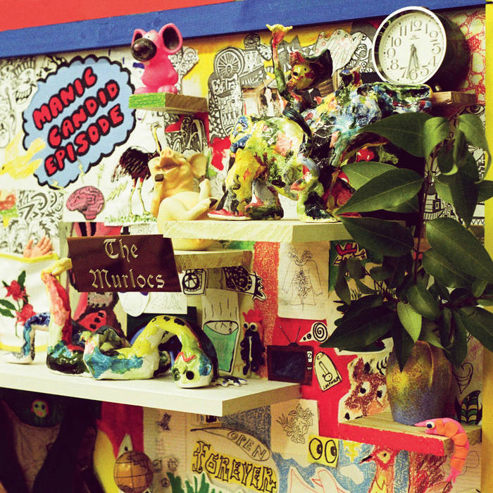

The Murlocs Bandcamp Info
Five skinny kids with roots firmly placed in their own blown-out, distorted brand of soulful RnB. Formed in early 2011 by harp player Ambrose Kenny-Smith, The Murlocs have already played alongside Thee Oh Sees, Graveyard Train and Dave Graney. Their up-tempo snare cracks and noisy doom guitar - accompanied by Ambrose's vocal screech - has been described as a mesmerising demented dance party. Murlocs Bandcamp
Comfort Zone
I recently discoverd the Murlocs and currently Comfort Zone is my favorite song off their new album. Give it a listen below!
